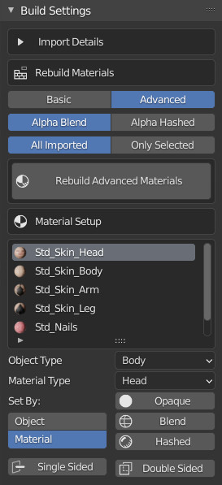

Build Settings
Import Details
Here you can see some details about the imported character, the name and import type as well as the presence of an FbxKey or ObjKey file and a list of all imported objects.
Rebuild materials
Here you can set the overall build settings for the materials.
Basic Materials
(Re)build materials with simple PBR set ups.
Advanced Materials
(Re)build materials as advanced materials including blend maps, subsurface scattering, blend normals and micro normals and smart hair shading.
Alpha Blend
Prefer the basic alpha blend as the default alpha blend method for any transparent materials.
Alpha Hashed
Prefer alpha hashing as the default alpha blend method for any transparent materials.
All Imported
Rebuild materials for all the import objects for this character.
Only Selected
Rebuild materials, but only for the selected objects.
Material Setup
Here you can select materials and set their build types, alpha blending and back face culling methods.
Object Type
This is the type of the object as detected by the import system. Each object is identified by keywords in the object or material names. Should the auto detection get it wrong you can correct the types here. Typically this will be used to correct issues with hair object detection, e.g. eye brows objects not detecting.
Material Type
This is the type of the material as detected by the import system. Like the objects, each material is identified by keywords in the material names Should the auto detection get it wrong you can correct the types here. Typically this will be used to correct issues with hair material detection, e.g. accessories in the hair mesh.
Set By Object
Can apply alpha blending and back face culling to all materials in the selected objects.
Set By Material
Only apply alpha blending and culling methods to the active material.
Opaque
Set the material to fully opaque.
Blend
Set the material to use basic alpha blending.
Hashed
Set the material to use alpha hashing, sometimes known as dithered alpha blending. This style of alpha blending is better for hair or fur as the dithered pattern blending resolves any z-sorting problems, but it generally needs more render samples to look clean.
Single Sided
Turns on backface culling so the material is single sided.
Double Sided
Turns off backface culling so the material is visible from both sides.